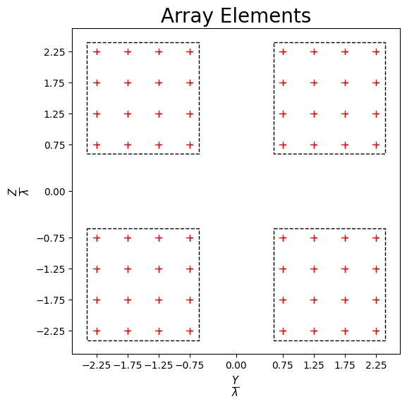
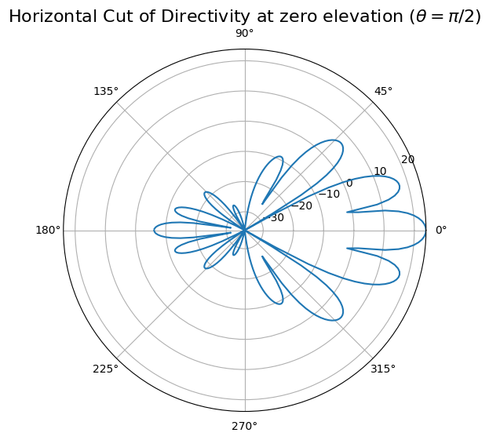
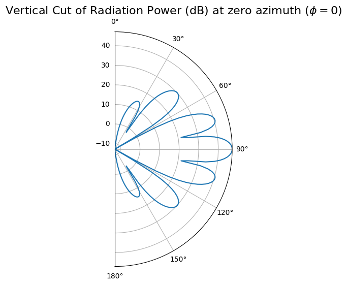
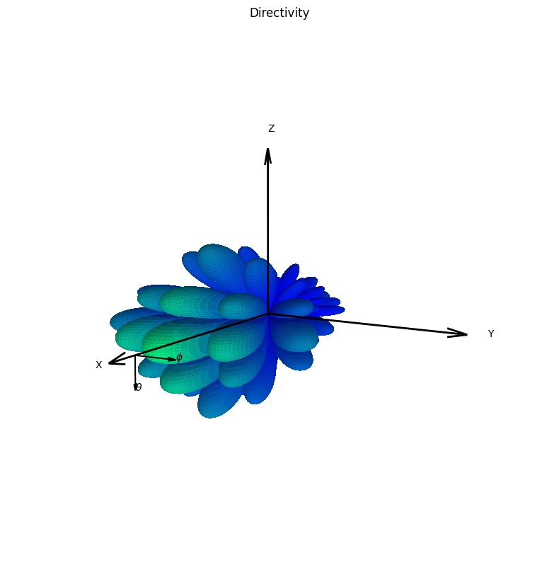

Antenna Array
[1]:
import numpy as np
import time
import neoradium as nr
[2]:
# We first create an antenna element template. The antenna panel class "AntennaPanel" uses this
# template to create the elements of the panel.
elementTemplate = nr.AntennaElement(beamWidth=[65,65], maxAttenuation=30)
# Now we create an antenna panel template. The antenna array class "AntennaArray" uses this template
# to create the panels in the antenna array.
panelTemplate = nr.AntennaPanel([4,4], elements=elementTemplate, polarization="+")
# Now we can create the antenna array using the panel template. Note that the spacing values are multiples of
# wavelength.
antennaArray = nr.AntennaArray([2,2], spacing=[3,3], panels=panelTemplate)
# The "showElements" method draws the antenna array showing all panels and elements.
antennaArray.showElements(zeroTicks=True)

[3]:
# Depending on the input parameters the "drawRadiation" method can create different types of graphs. Here
# we draw the directivity of the antenna at the horizontal plane of zero elevation.
radValues = antennaArray.drawRadiation(theta=90, radiationType="Directivity", normalize=False)

[4]:
# Here the "drawRadiation" method is used to draw the radiation power in the vertical plane at azimuth angle 0.
radValues = antennaArray.drawRadiation(phi=0, radiationType="PowerDb", normalize=False)

[5]:
# Here the "drawRadiation" method is used to draw a 3D graph of directivity.
radValues = antennaArray.drawRadiation(radiationType="Directivity", normalize=True,
viewAngles=(30,10), figSize=10)

[ ]: